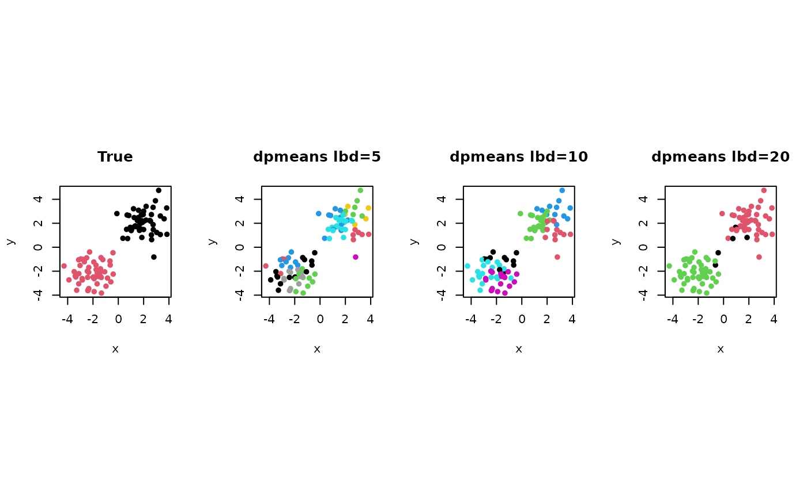

DP-means is a nonparametric clustering method motivated by DP mixture model in that the number of clusters is determined by a parameter \(\lambda\). The larger the \(\lambda\) value is, the smaller the number of clusters is attained. In addition to the original paper, we added an option to randomly permute an order of updating for each observation's membership as a common heuristic in the literature of cluster analysis.
dpmeans( data, lambda = 1, maxiter = 1234, abstol = 1e-06, permute.order = FALSE )
Arguments
| data | an \((n\times p)\) data matrix for each row being an observation. |
|---|---|
| lambda | a threshold to define a new cluster. |
| maxiter | maximum number of iterations. |
| abstol | stopping criterion |
| permute.order | a logical; |
Value
a named list containing
- cluster
an \((n\times ndim)\) matrix whose rows are embedded observations.
- centers
a list containing information for out-of-sample prediction.
References
Kulis B, Jordan MI (2012). “Revisiting K-Means: New Algorithms via Bayesian Nonparametrics.” In Proceedings of the 29th International Coference on International Conference on Machine Learning, ICML'12, 1131--1138. ISBN 978-1-4503-1285-1.
Examples
## define data matrix of two clusters x1 = matrix(rnorm(50*3,mean= 2), ncol=3) x2 = matrix(rnorm(50*3,mean=-2), ncol=3) X = rbind(x1,x2) lab = c(rep(1,50),rep(2,50)) ## run dpmeans with several lambda values solA <- dpmeans(X, lambda= 5)$cluster solB <- dpmeans(X, lambda=10)$cluster solC <- dpmeans(X, lambda=20)$cluster ## visualize the results opar <- par(no.readonly=TRUE) par(mfrow=c(1,4), pty="s") plot(X,col=lab, pch=19, cex=.8, main="True", xlab="x", ylab="y") plot(X,col=solA, pch=19, cex=.8, main="dpmeans lbd=5", xlab="x", ylab="y") plot(X,col=solB, pch=19, cex=.8, main="dpmeans lbd=10", xlab="x", ylab="y") plot(X,col=solC, pch=19, cex=.8, main="dpmeans lbd=20", xlab="x", ylab="y")par(opar) # \donttest{ ## let's find variations by permuting orders of update ## used setting : lambda=20, we will 8 runs sol8 <- list() for (i in 1:8){ sol8[[i]] = dpmeans(X, lambda=20, permute.order=TRUE)$cluster } ## let's visualize vpar <- par(no.readonly=TRUE) par(mfrow=c(2,4), pty="s") for (i in 1:8){ pm = paste("permute no.",i,sep="") plot(X,col=sol8[[i]], pch=19, cex=.8, main=pm, xlab="x", ylab="y") }